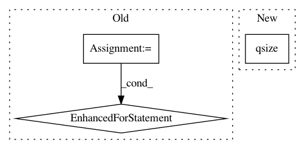

10919a8125c64db1fecee47d4480ae6c5c9f7224,QUANTAXIS/QAFetch/QATdx_adv.py,QA_Tdx_Executor,api_worker,#QA_Tdx_Executor#,147
Before Change
def api_worker(self):
// 将IP列表随机排序，避免只使用列表前面的IP地址
ip_list = stock_ip_list
random.shuffle(ip_list)
for item in ip_list:
if self._queue.full():
return
_sec = self._test_speed(ip=item["ip"], port=item["port"])
if _sec < self.timeout*3:
try:
self._queue.put(TdxHq_API(heartbeat=False).connect(
ip=item["ip"], port=item["port"], time_out=self.timeout*2))
except:
pass
Timer(300, self.api_worker).start()
def _singal_job(self, context, id_, time_out=0.7):
try:
After Change
def api_worker(self):
data = []
if self._queue.qsize() < 80:
for item in stock_ip_list:
if self._queue.full():
break
In pattern: SUPERPATTERN
Frequency: 3
Non-data size: 3
Instances
Project Name: QUANTAXIS/QUANTAXIS
Commit Name: 10919a8125c64db1fecee47d4480ae6c5c9f7224
Time: 2019-04-10
Author: Zeroun@github.com
File Name: QUANTAXIS/QAFetch/QATdx_adv.py
Class Name: QA_Tdx_Executor
Method Name: api_worker
Project Name: HazyResearch/fonduer
Commit Name: 735287afab4bdcbd791022dc9d75d88a4032c616
Time: 2019-10-23
Author: hiromu.hota@hal.hitachi.com
File Name: src/fonduer/utils/udf.py
Class Name: UDFRunner
Method Name: _apply_mt
Project Name: snorkel-team/snorkel
Commit Name: 834af542462c89643a35b7c7719782709ec03d5a
Time: 2018-08-02
Author: catalin@cs.stanford.edu
File Name: snorkel/udf.py
Class Name: UDFRunner
Method Name: apply_mt